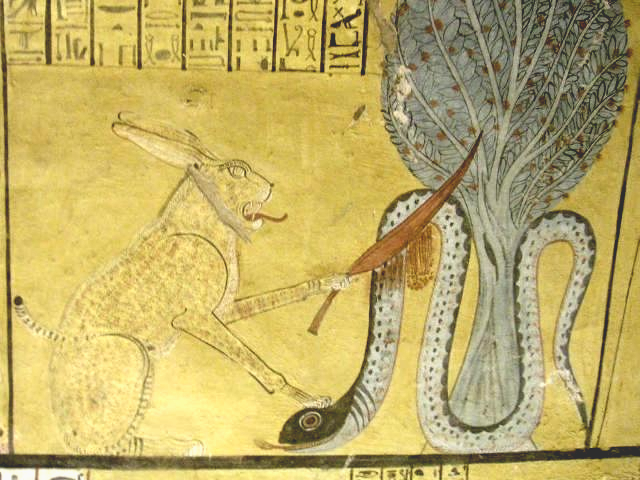

Кто такой Апоп
Апоп (греч. форма егип. Апеп) — гигантский змей хаоса, живущий в первоводах Нуна, за западным горизонтом, где солнце тонет на ночь. Он — не бог: ему не строят храмов, его не любят — его «обезвреживают». Эпитет его — «огибающий мир»: по «Книге врат», длина его тела — тридцать мер, из которых видна лишь малая часть. Он — «Змей змей», «Миллионы змей»?, «Владыка тишины»: тексты дают ему жутковатые эпитеты: «старый» (он древнее богов), «незримый», «не имеющий головы» — «бессмертный» — точный: Апопа нельзя убить.
Его оружие — не когти, а сила: он пьёт воды Нила (засуха?), его взгляд — оцепенение, «проглоченное им» солнце — так объясняли затмение. Он — та самая исфет, хаос, против которого стоит Маат: не «тёмный бог», а анти-мир.
Ночная битва
Каждую ночь Ра в барке проходит двенадцать часов Дуата, и в шестой/седьмой час (варианты книг) ладья встаёт: Апоп спит в водах «прекрасной реки» подземного мира, и его пробуждение = гибель мира. Спасают: Сет — стоя на носу барки, вонзает копьё (парадокс: Сет, сам сын хаоса, — главный защитник порядка от Апопа: «сила служит Маат»), Сияние — «рассекает» его: тексты: голова Апопа «рассечена гарпуном», глаза ослеплены «огнём Маат», слова парализованы «заклинаниями Тота». Барка идёт дальше: на рассвете солнце встаёт — значит, битва выиграна. Завтра — снова.
Это — трагическая теология: зло не ликвидировано «в начале времён» и не будет ликвидировано «в конце»: оно дежурит каждую ночь, и мир держится только ежедневной победой. Отсюда и ответственность человека: заклинания помогают барке.
Ритуалы ненависти
В храмах хранили «Книги уничтожения Апопа» (Papyrus Harris? — «Книга переворачивания Апопа»): текст + картинки змея, пронзённого ножами, сколотого, сожжённого. Ритуал: лепили восковых «Апопов» с именами врагов (личных и царских), плевали на них, топтали, жгли, бросали в воду — «умертви Апопа в образе его». В храме Амона в Фивах была особая «дом Апопа» — не культ, а «кухня» ритуального уничтожения: там резали/жгли модели змея во время лунных затмений (затмение = Апоп схватил барку: жрецы зажигали огни и метали в воздух копья — «помогали» барке). Папирус Леиден I 348 — «Книга переворачивания Апопа»: заклинания «да не будет Апопу пути ко мне» — личная магия на каждый день.